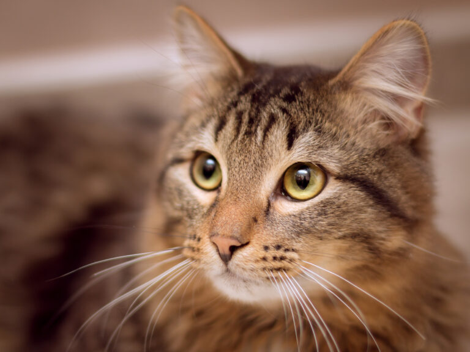

Adopta una mascota
Ayuda a un animal en adopción y dale un hogar lleno de amor.

Perros
Los perros son animales fieles y cariñosos, perfectos para familias con niños. Hay perros de todas las razas y tamaños, por lo que seguro que encuentras uno que se adapte a tu estilo de vida.

Gatos
Los gatos son animales independientes y curiosos, perfectos para personas que viven solas o que trabajan mucho. Hay gatos de todos los colores y pelajes, por lo que seguro que encuentras uno que te enamore.
¿Cómo adoptar una mascota?
Para adoptar una mascota, debes cumplir con los siguientes requisitos:
- Ser mayor de edad
- Tener un hogar adecuado para la mascota
- Tener tiempo y recursos para cuidar de la mascota